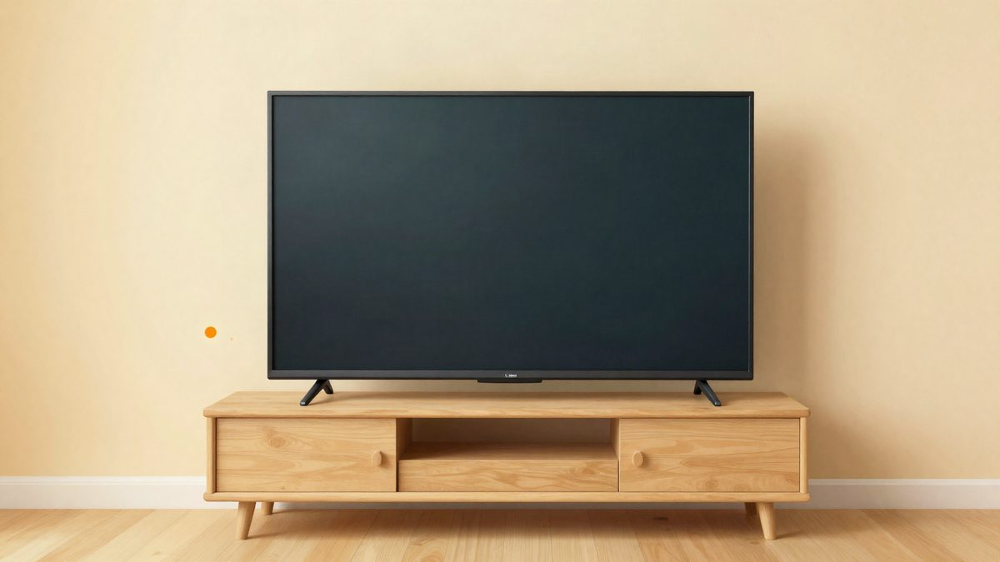
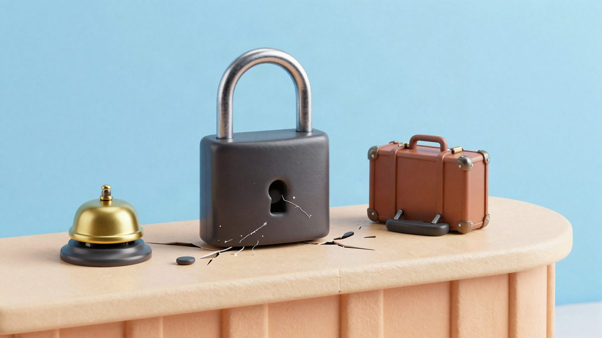

Claude Code očistio televizore od reklama: projekt CleanYourTV ima oko 13.700 zvjezdica na GitHubu

Developer Gathin je uz pomoć Claude Codea ugasio 25 sistemskih komponenti na Xiaomi televizoru i postavio minimalan početni zaslon. Prompt i izvorni kod objavio je kao open source projekt CleanYourTV, koji je u nekoliko dana dobio oko 13.700 zvjezdica na GitHubu.
Developer Gathin prošlog je tjedna objavio fotografije televizora koji je preuredio za svoje roditelje. Prema njegovu opisu, njihov Xiaomi TV prikazivao je sponzoriranu reklamu čak i prije pokretanja Netflixa. Gathin je model televizora predao programskom asistentu Claude Code, koji se preko Wi-Fi-ja spojio na uređaj i onemogućio 25 sistemskih komponenti. Zatim je napisao minimalan početni zaslon umjesto zatrpanog glavnog zaslona.
Prompt, izvorni kod novog zaslona i bilješke o problemima Gathin je objavio na GitHubu pod nazivom CleanYourTV. Projekt je u nekoliko dana skupio oko 13.700 zvjezdica. Na Redditu ljudi pitaju radi li postupak i na njihovim modelima, a neki su objavili slike vlastitih preuređenih početnih zaslona.
Kako to radi
Postupak se temelji na ADB-u (Android Debug Bridge), alatu koji se na Androidu koristi godinama. Televizor i računalo moraju biti u istoj lokalnoj mreži, a na televizoru treba uključiti debugging. AI zatim kroz terminal pregledava stotine pokrenutih komponenti, prepoznaje reklame pri pokretanju i telemetrijske programe koji šalju podatke o gledanju te ih "zamrzava". Na kraju se postavlja čisti open source launcher. HDMI i ostali ulazi, koji su inače skriveni u izbornicima, mogu biti stalno dostupni na početnom zaslonu.
YouTuber Ansub Khan preuredio je svoj televizor na sličan način i objavio projekt TV Detox. Njegov novi početni zaslon prikazuje samo sat, najčešće korištene video aplikacije i ulaze. U videu navodi da se slobodna memorija povećala s oko 370 MB na 600 do 650 MB. Korisnik TCL Beyond televizora koji je slijedio isti prompt kaže da nema točnih mjerenja, ali da je sustav osjetno brži.
Mišljenja o idealnom televizoru razlikuju se. Neki žele zadržati tvorničko sučelje i samo ukloniti reklame i preporuke, uz prečace na tipkama daljinskog. Vlasnik Sonyja KD-55A8H otišao je dalje: sat je prebacio na 24-satni prikaz, uklonio pozdrave i datum te promijenio sistemski font u IBM Plex Sans.
Zašto na televizorima ima reklama
Televizori su sve jeftiniji, dijelom zbog jeftinijih panela, a dijelom jer proizvođači hardver prodaju uz mali ili nikakav profit. Prema financijskim izvješćima, Roku je u 2025. na hardveru imao bruto gubitak od 82,02 milijuna dolara, dok je platformski dio (digitalno oglašavanje, pretplate i distribucija sadržaja) ostvario bruto dobit od 2,156 milijardi dolara. TCL Electronics navodi da je internetski segment u 2025. donio 3,11 milijardi hongkonških dolara prihoda uz bruto maržu od 56,4 posto. Veliki zasloni imali su maržu od 16,8 posto.
U Kini regulator tvrdi da 93 posto glavnih modela sada omogućuje isključivanje reklame pri pokretanju jednim klikom. Ograničenja ne obuhvaćaju reklame unutar samih streaming aplikacija, poput oglasa prije filma, promotivnih plakata pri pauzi ili posebnih VIP prozora. CleanYourTV čisti samo predinstalirane pakete i službeni launcher, a ne pravila pojedinih aplikacija.
Slični projekti na fotoaparatima
Isti pristup postoji i kod fotoaparata. Projekt Recipe Lab na starijim Sony modelima, poput A6000 i A6300, omogućuje vlastite color recipe postavke. Istraživanje firmwarea Sonyja A7 IV pronašlo je u verziji 6.02 kod za shutter angle i LUT-ove koje proizvođač nije aktivirao. Za Nikon Z30 postoje proširenja s ekspozicijom do 900 sekundi i vlastitim zvukom zatvarača, a kineska zajednica navodno je rastavila i ponovno potpisala Nikonov firmware. Za Ricoh GR razvijen je GR Mod, koji dodaje vlastite LUT-ove i format 65:24. Za Fujifilm X70 razvija se port novijih filmskih simulacija, a Hasselblad X Unleashed iskorištava činjenicu da neki Hasselbladovi fotoaparati rade na prilagođenom Androidu. Na Hasselbladu X2D 100C čak je pokrenut Doom.
CleanYourTV je besplatan i dostupan na GitHubu, ali ovisi o modelu televizora, a uspjeh na pojedinim uređajima nije zajamčen.
Izvor: ifanr (爱范儿)
Povezani članci
 Recursive je objavio Flint, besplatni coding model za laptop koji je velikim dijelom izgradio AI21. listopada 2026.
Recursive je objavio Flint, besplatni coding model za laptop koji je velikim dijelom izgradio AI21. listopada 2026. Claude pronašao gotovo 500 sigurnosnih propusta u 25 open source projekata, jedan je stariji od 21 godinu23. listopada 2026.
Claude pronašao gotovo 500 sigurnosnih propusta u 25 open source projekata, jedan je stariji od 21 godinu23. listopada 2026.
Rakuten Travel hakiran: moguće je curenje podataka do 2,6 milijuna korisnika26. listopada 2026.